风骨长存：大义的代价
1935年寒冬，兰硕群挺身而出，只身赴万县为革命烈士兰庶康收尸。四十个日夜的风餐露宿，他硬是将义与胆背回了故乡。1945年，他再次率众击退欺凌乡邻的伪军。在那血雨腥风的岁月里，他是一座庇护乡邻、坚不可摧的丰碑。
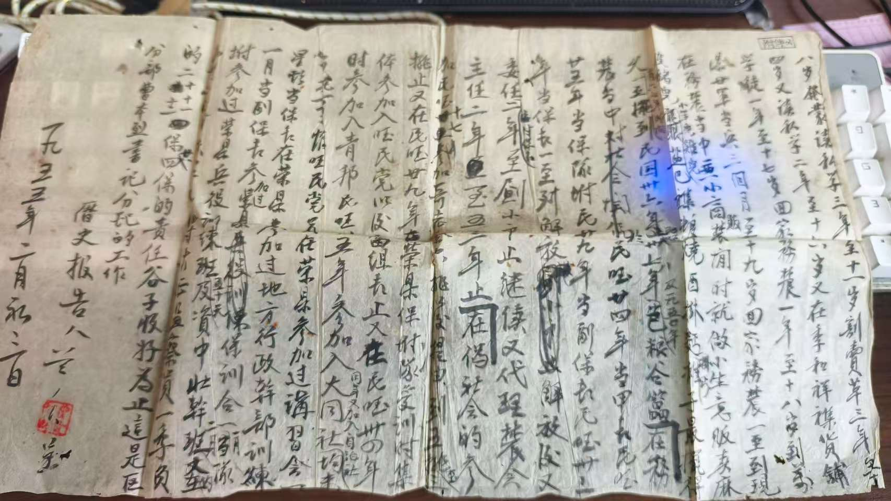
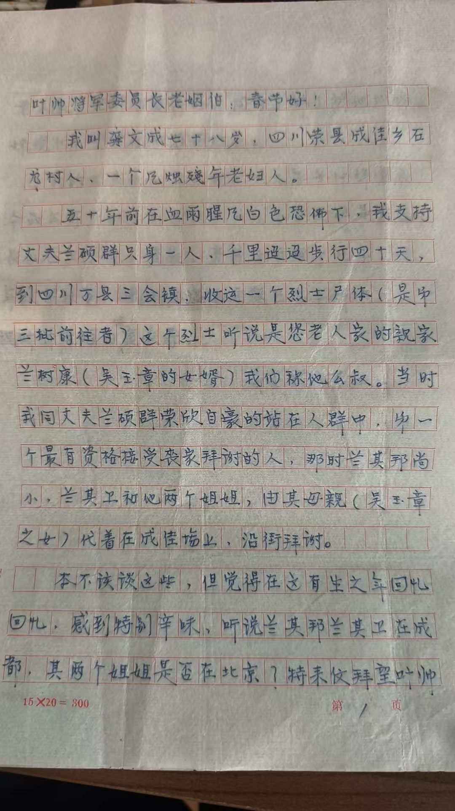
代号314：一场荒诞的交锋
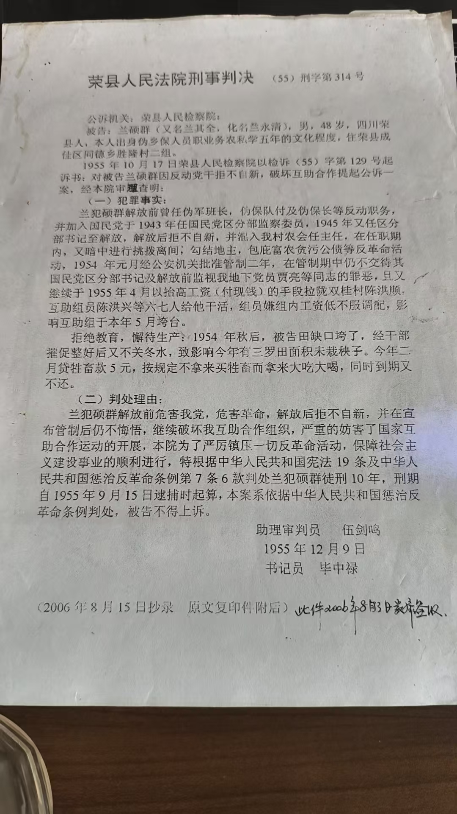
1955年，(55)刑字第314号判决书以“未栽秧子”等微小罪名，将义士定性为“历史反革命”。这一纸文书，将兰氏家族拖入了长达三十年的深渊。
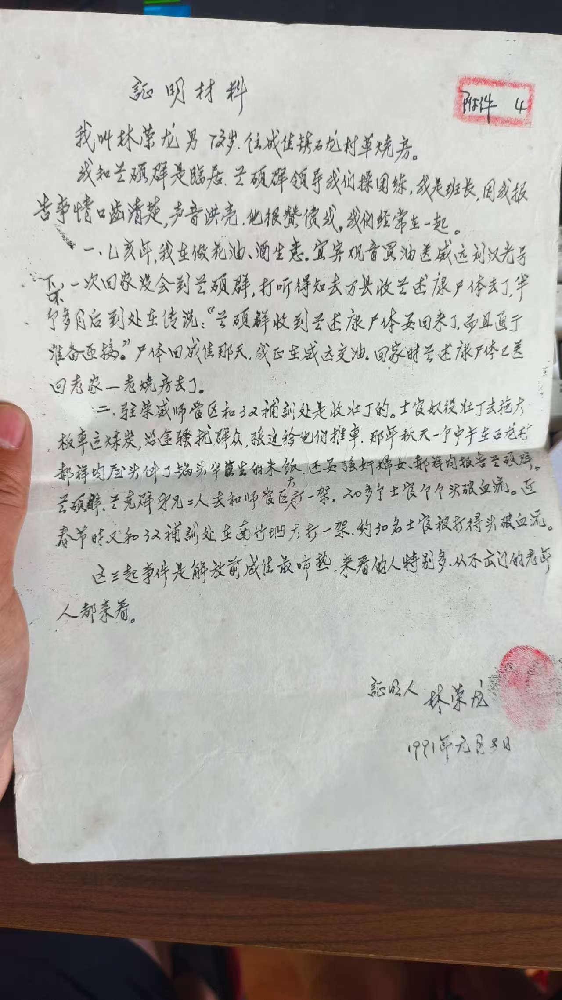
1991年，乡民林荣龙、饶先郎等纷纷按红手印证实兰硕群当年的壮举，粉碎了判决书中的欲加之罪。
岁月刻度对比
光阴的回响
兰仲祥老人在极端的苦难中仍保持着对生活的热爱，他钻研《识鸽子》鉴赏，更将《宪法》条款写进分房协议，用一生的痛换来了对法治最纯粹的信仰。
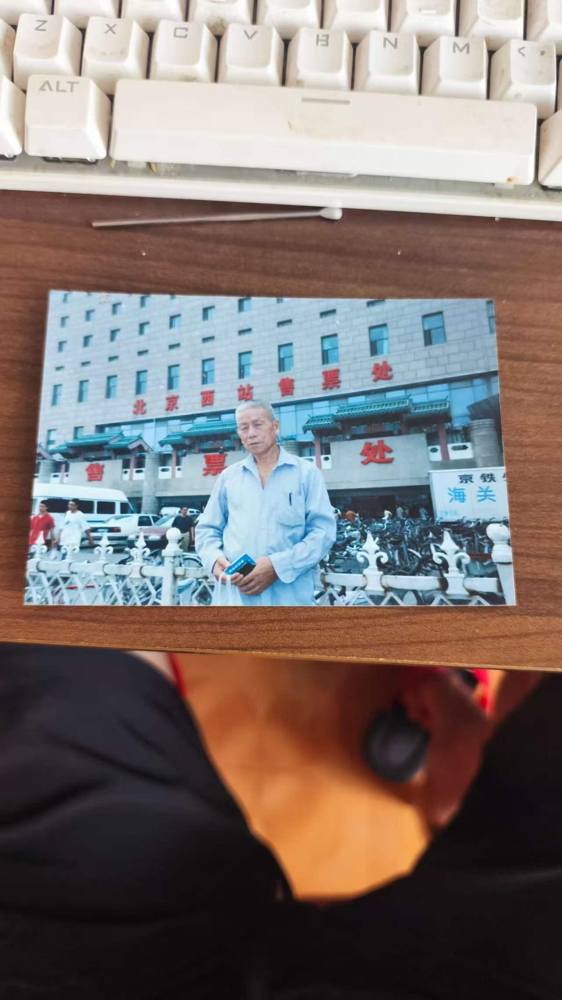
全宗卷物证陈列
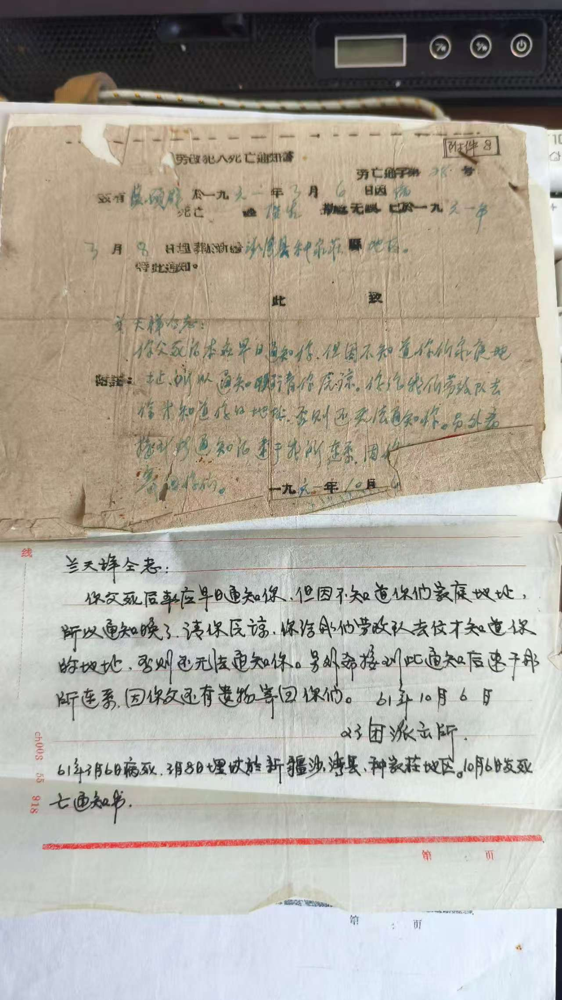

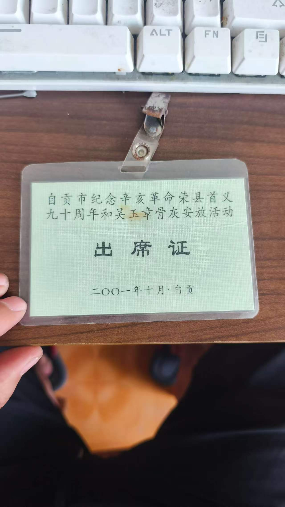
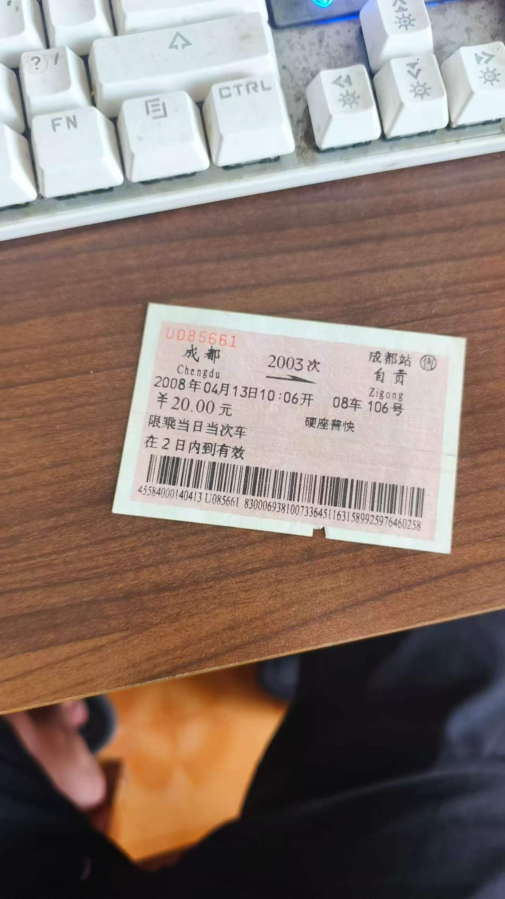
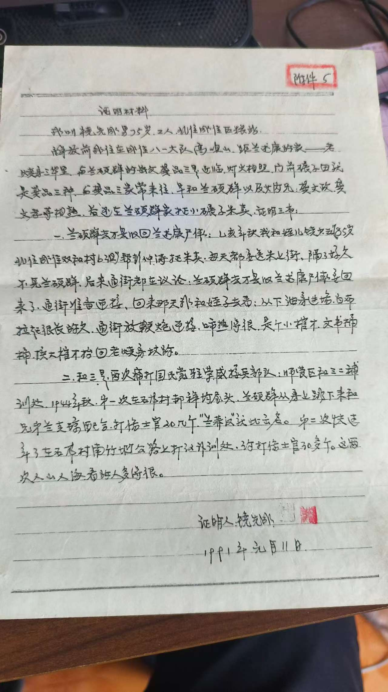
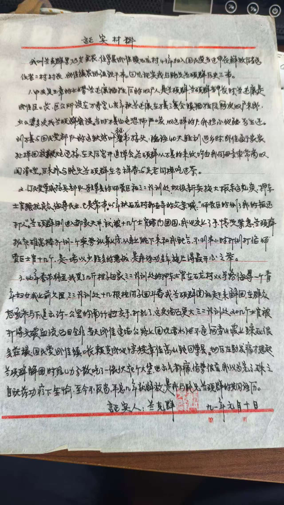
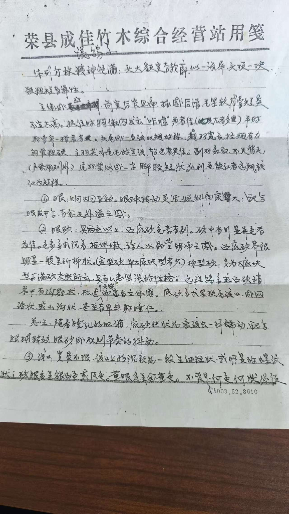
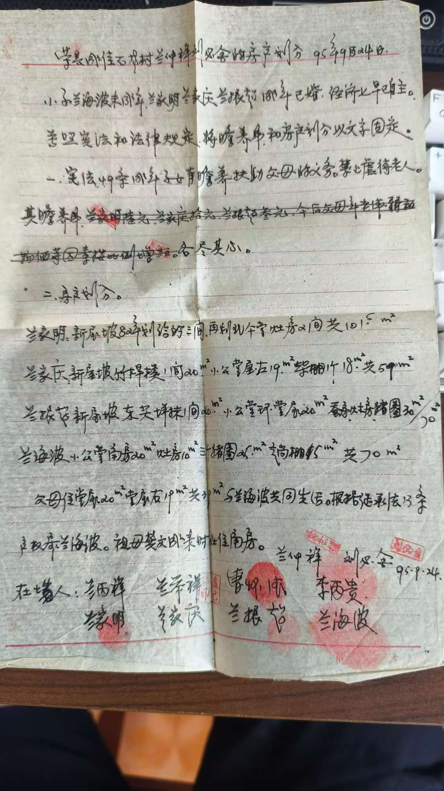
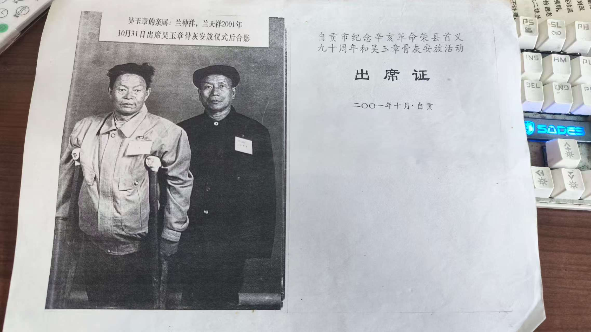
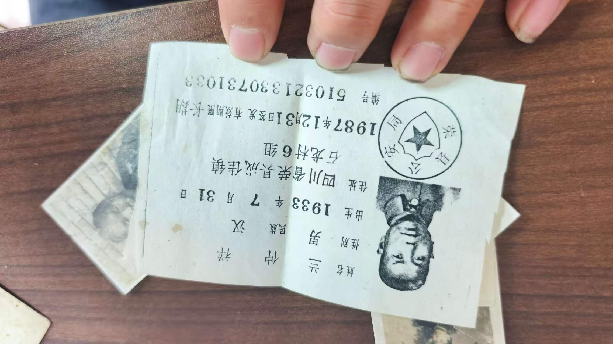